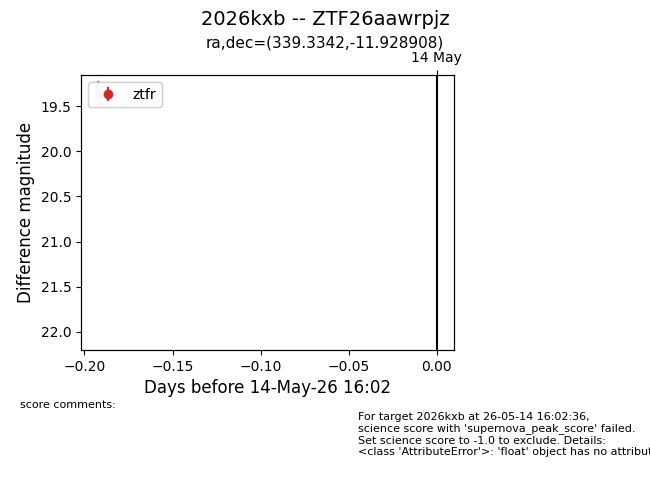
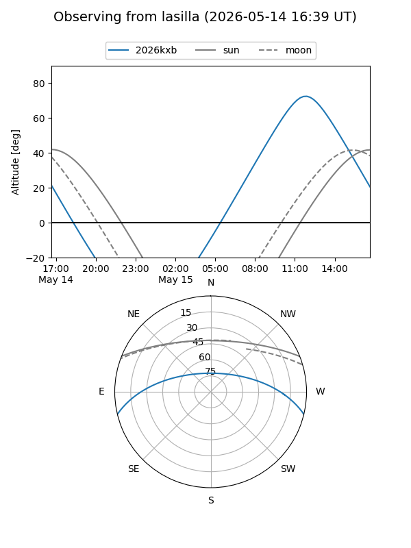
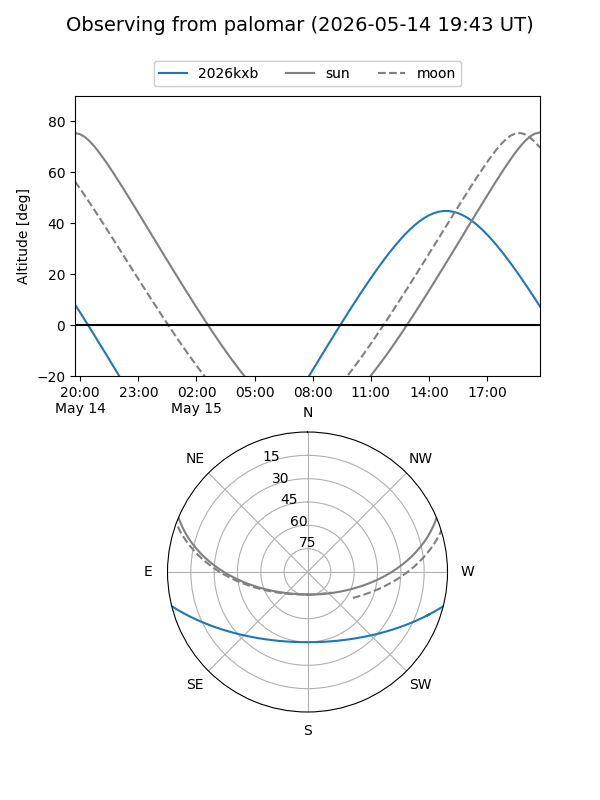
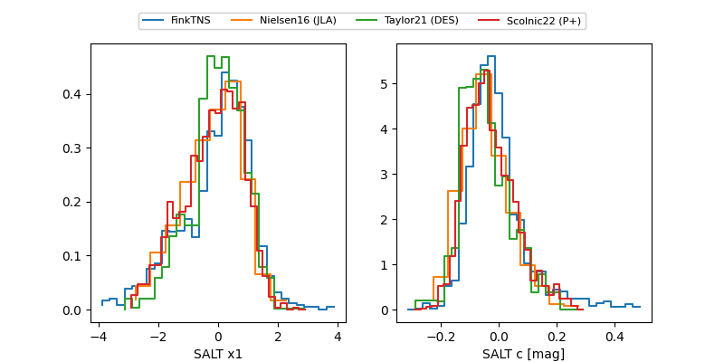

2026kxb
Target 2026kxb at 2026-05-14 16:04
Aliases and brokers:
FINK: link
Lasair: link
ALeRCE: link
TNS: link
YSE: link
alt names
ZTF26aawrpjz (ztf,fink_ztf)
2026kxb (tns,yse)
Coordinates:
equatorial (ra, dec) = 339.3342,-11.92891
equatorial (HMS+DMS) = 22:37:20.21,-11:55:44.07
galactic (l, b) = (52.1112,-55.10085)
Flags:
Photometry:
last ztfr=19.36
1 ztfr detections
Lightcurve

Visibility


Additional plots
